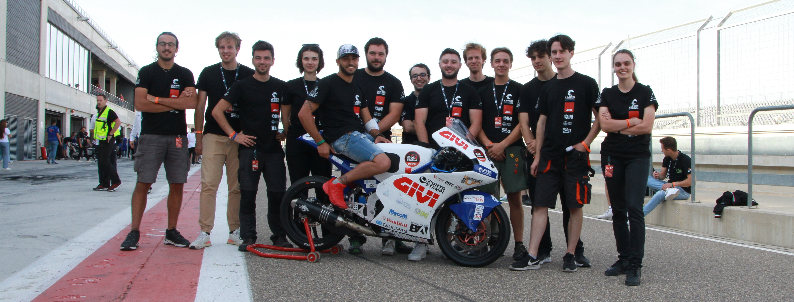
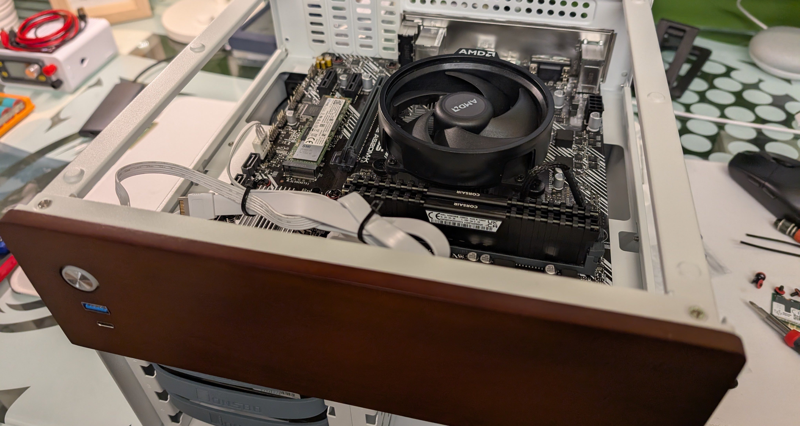
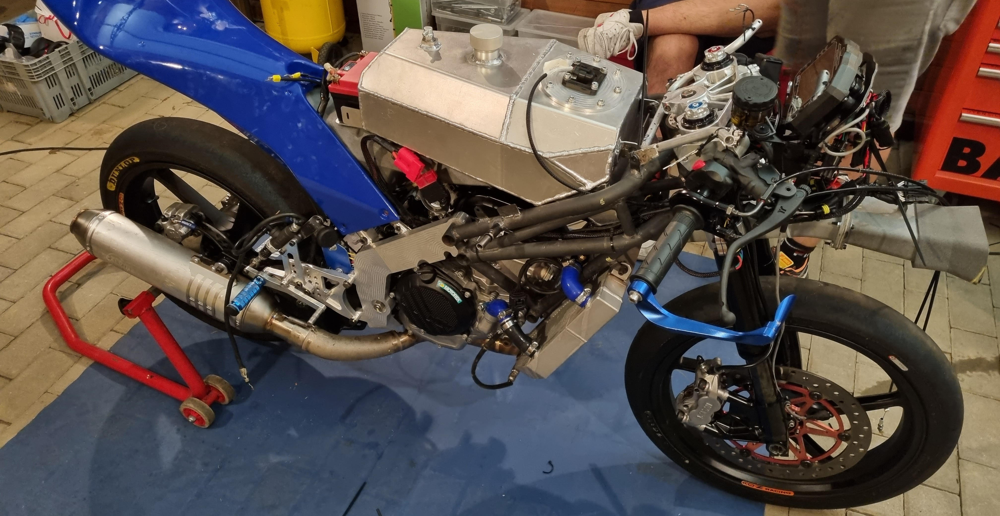
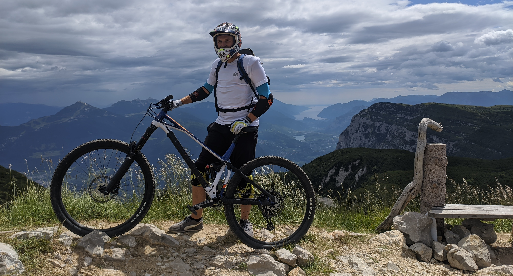

About me

Hi, I'm Dylan Zanaglio, an Electronic Engineering student at UNIBS (University of
Brescia) with a
deep passion for electronics, embedded systems, innovation, and
Motorsport.
I am always eager to explore new technologies, electronic design methodologies, and programming
techniques. My studies and hands-on experience have allowed me to work on hardware projects,
develop
embedded firmware, and design circuits. I thrive on tackling challenges and pushing
the boundaries
of technology. As the team lead of the electronics division at GIVI UniBS MotoStudent
Team, I have
the opportunity to develop and test innovative ideas in a dynamic environment.
During my studies, I developed a strong interest in competitive programming and
problem-solving,
which led me to participate in the IEEXtreme competition—an intense global coding challenge.
This
experience enhanced my skills in algorithm development, efficiency optimization, and
teamwork.
Professionally, I have worked on developing embedded boards and user interfaces for
HVAC heat
recovery devices, gaining hands-on experience with microcontrollers, PCB
design, and
firmware
development in an industrial setting.
If you share similar interests or want to discuss exciting tech ideas, feel free to connect with me!
🚀
Projects

Personal Projects
Electric Scooter Conversion
I'm upgrading an electric scooter by replacing its original lead-acid batteries and 250W motor with a
more powerful and efficient system. The new setup features a 48V 18650 lithium battery pack
and a 2kW three-phase asynchronous motor, significantly improving performance and range.
Homelab Development
My homelab is built around a Ryzen 5 5600G with 16GB RAM @ 3200MHz, a Coral TPU,
and 6TB raw storage (3TB RAIDZ1). It hosts multiple services, including:
- Home Assistant (smart home automation)
- Frigate (AI-powered security camera system)
- Omada Controller (network management)
- Immich (self-hosted photo management)
- Nextcloud (private cloud storage)
- And more...

University Projects
Givi MotoStudent Team
As part of the electronic team in the Givi MotoStudent project at UniBS, I contribute to modernizing
the motorcycle's sensor data acquisition system. Our goals include:
- Developing custom sensor aggregator boards in-house
- Using a Raspberry Pi 5 as the main controller with a touchscreen interface for the rider
- Integrating additional data sources like a weather station and a heart rate sensor
CyberChallenge.IT
I recently joined the CyberChallenge.IT, a national CTF-style cybersecurity competition. I'm
currently getting familiar with the competition format and challenges.
IEEExtreme 2021
In 2021, I participated in IEEExtreme, a global programming competition that tests
problem-solving skills across various topics.
Passions

Photography📷
For me, photography is more than just taking pictures—it's about capturing emotions, stories, and the
thrill of a moment. Whether I'm out in nature shooting landscapes or trying to freeze the raw speed
of a motorsport event, I love the challenge of finding the perfect angle, the right lighting, and
the best composition. It’s my way of seeing the world differently and sharing my perspective with
others.
Electronics Projects📟
Ever since I was a kid, I’ve been fascinated by how things work. Tinkering with electronics lets me
turn ideas into reality, whether it’s building circuits, working with microcontrollers, or
automating tasks. I love the process of problem-solving, debugging, and eventually watching a
project come to life. It’s that mix of creativity and technical skill that keeps me hooked.
Homelabs🌐
There's something deeply satisfying about designing and optimizing my own homelab. From setting up
virtual machines to fine-tuning network configurations, I enjoy pushing the limits of what I can
build at home. It’s not just about having a personal server—it's about experimenting, learning, and
constantly improving my setup to make everything more efficient and secure.
Sports🏃🏻
I’ve always been drawn to sports that challenge both the body and mind. They push my limits, fuel
my competitive side, and give me an escape from the daily routine.
-
Mountain Biking🚴🏻♂️
There's no better feeling than flying down a trail, navigating technical descents, and
pushing myself on the climbs. It’s a sport that demands focus, skill, and endurance, and
I love every second of it.
-
Motorsport🏎️
The combination of speed, precision, and engineering fascinates me. Whether I’m watching
a race, learning about vehicle dynamics, or trying my hand at simulations, I get
completely absorbed in the world of motorsport.
-
Skiing⛷️
Nothing beats the thrill of carving through fresh snow, feeling the rush of cold air, and
mastering new slopes. Skiing is pure freedom and adrenaline wrapped into one.
-
Swimming🏊🏼
The water has always been my reset button. Whether I’m training, unwinding, or just
enjoying the rhythm of each stroke, swimming keeps me grounded and helps me stay fit.
Contact